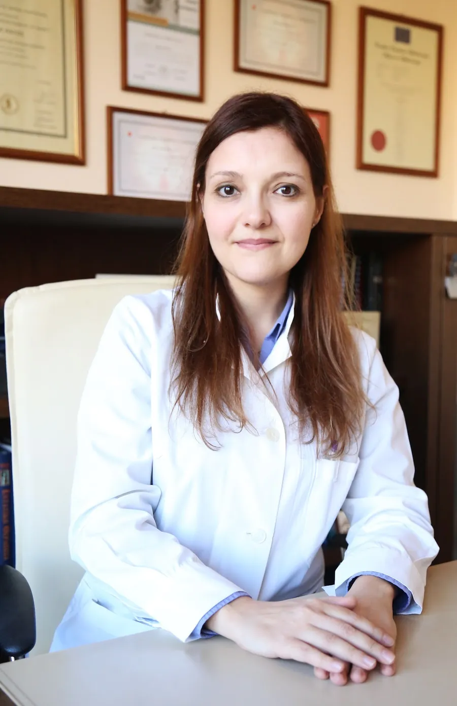

GoogleΕπίσημο προφίλ επιχείρησης
5,0★★★★★
Μέση βαθμολογία από δεκάδες αξιολογήσεις ασθενών στο Google.
Ολοκληρωμένη οφθαλμολογική φροντίδα για ενήλικες και παιδιά: καταρράκτης, διαθλαστική χειρουργική με laser, γλαύκωμα και παθήσεις του αμφιβληστροειδούς και της ωχράς κηλίδας, με σύγχρονο διαγνωστικό εξοπλισμό.

Σταυρούλα Δάβου, FEBO · Χειρουργός Οφθαλμίατρος
Η γιατρός
Σε κάθε ασθενή αφιερώνεται ο χρόνος για μια ενδελεχή εξέταση, για τις ερωτήσεις του και για μια σαφή εξήγηση της διάγνωσης και των θεραπευτικών επιλογών.
Η Σταυρούλα Δάβου αποφοίτησε από την Ιατρική Σχολή του Εθνικού και Καποδιστριακού Πανεπιστημίου Αθηνών και ειδικεύτηκε στην Οφθαλμολογία στην Α΄ Πανεπιστημιακή Οφθαλμολογική Κλινική του ΓΝΑ «Γ. Γεννηματάς». Κατέχει τον Ευρωπαϊκό Τίτλο Οφθαλμολογίας (Fellow of the European Board of Ophthalmology — FEBO).
Είναι μέλος του Ιατρικού Συλλόγου Αθηνών. Διαθέτει επίσης επαγγελματική εμπειρία από το εξωτερικό: έχει εργαστεί για πέντε χρόνια στη Γαλλία και παραμένει μέλος και του Ιατρικού Συλλόγου του Loir-et-Cher (CDOM Loir-et-Cher).
Το κλινικό της έργο εστιάζει στη διαθλαστική χειρουργική και τον καταρράκτη, στις παθήσεις του βυθού και τις ενδοϋαλοειδικές ενέσεις, καθώς και στο γλαύκωμα με ανάλυση οπτικών πεδίων. Στο ιδιωτικό της ιατρείο, στην κεντρική πλατεία της Νέας Πεντέλης, εξετάζει ενήλικες και παιδιά με σύγχρονο διαγνωστικό εξοπλισμό, κατόπιν ραντεβού.
Υπηρεσίες
Από τη διάγνωση έως τη χειρουργική αντιμετώπιση. Κάθε επίσκεψη ξεκινά με πλήρη οφθαλμολογική εξέταση και ολοκληρώνεται με σαφή ενημέρωση για τα ευρήματα και τα επόμενα βήματα.
Χειρουργική καταρράκτη
Ο καταρράκτης είναι η σταδιακή θόλωση του φυσικού φακού του ματιού. Τα χρώματα ξεθωριάζουν, η οδήγηση το βράδυ κουράζει, η αντανάκλαση από τα φώτα μεγαλώνει και τα γυαλιά δεν βοηθούν όπως πριν. Για τους περισσότερους ανθρώπους είναι μέρος της ηλικίας, μπορεί όμως να εμφανιστεί και νωρίτερα — μετά από τραυματισμό, με σακχαρώδη διαβήτη ή με μακροχρόνια λήψη ορισμένων φαρμάκων.
Η μόνη θεραπεία είναι χειρουργική: ο θολός φακός αφαιρείται και αντικαθίσταται από έναν διαυγή τεχνητό ενδοφακό. Η κα Δάβου εκτιμά το κατάλληλο χρονικό σημείο για την επέμβαση, κάνει τις μετρήσεις για τον κατάλληλο φακό και εξηγεί κάθε βήμα πριν, κατά τη διάρκεια και μετά την επέμβαση, με στενή παρακολούθηση στη συνέχεια.
Laser διαθλαστικών ανωμαλιών
Η μυωπία, η υπερμετρωπία και ο αστιγματισμός είναι διαθλαστικές ανωμαλίες: το μάτι δεν εστιάζει το φως ακριβώς πάνω στον αμφιβληστροειδή. Το laser διαθλαστικών ανωμαλιών αλλάζει με ακρίβεια το σχήμα του κερατοειδούς, ώστε η εικόνα να πέφτει εκεί που πρέπει, και μειώνει ή καταργεί την ανάγκη για γυαλιά και φακούς επαφής.
Δεν είναι κάθε μάτι κατάλληλο. Πριν από οποιαδήποτε σύσταση, η κα Δάβου ελέγχει το πάχος και το σχήμα του κερατοειδούς με παχυμετρία και τοπογραφία, επιβεβαιώνει ότι ο βαθμός είναι σταθερός και εξηγεί με ειλικρίνεια τι να περιμένετε — μαζί με τις επιλογές για την πρεσβυωπία μετά τα σαράντα.
Γλαύκωμα
Το γλαύκωμα βλάπτει σιγά σιγά το οπτικό νεύρο και, στη συχνότερη μορφή του, χωρίς πόνο και χωρίς πρώιμα συμπτώματα. Πρώτα στενεύει η περιφερική όραση, γι’ αυτό πολλοί το αντιλαμβάνονται αργά. Η βλάβη δεν αναστρέφεται — με έγκαιρη διάγνωση και τακτική παρακολούθηση όμως μπορεί να σταματήσει ή να επιβραδυνθεί.
Ο έλεγχος για γλαύκωμα περιλαμβάνει μέτρηση της ενδοφθάλμιας πίεσης, ανάλυση οπτικών πεδίων, παχυμετρία κερατοειδούς και απεικόνιση του οπτικού νεύρου. Η θεραπεία προσαρμόζεται σε κάθε άνθρωπο: σταγόνες, laser όπως το SLT και ένα πρόγραμμα παρακολούθησης που μπορείτε πραγματικά να τηρήσετε.
Αμφιβληστροειδής & ωχρά κηλίδα
Η ωχρά κηλίδα είναι το μικρό κεντρικό τμήμα του αμφιβληστροειδούς που μας δίνει την καθαρή λεπτομέρεια — το διάβασμα, τα πρόσωπα, την οδήγηση. Η ηλικιακή εκφύλιση της ωχράς κηλίδας και η διαβητική αμφιβληστροειδοπάθεια είναι από τις συχνότερες αιτίες απώλειας όρασης στους ενήλικες, και οι δύο αντιμετωπίζονται πολύ καλύτερα όταν εντοπίζονται νωρίς.
Η κα Δάβου εξετάζει τον βυθό του ματιού, χρησιμοποιεί απεικόνιση OCT και φλουοροαγγειογραφία όπου χρειάζεται και παρακολουθεί τις παθήσεις του αμφιβληστροειδούς, μαζί με τη θεραπεία με ενδοϋαλοειδικές ενέσεις και το laser για τη διαβητική αμφιβληστροειδοπάθεια. Σε όσους έχουν διαβήτη συνιστάται έλεγχος του αμφιβληστροειδούς τουλάχιστον μία φορά τον χρόνο.
Παιδοοφθαλμολογία
Τα παιδιά σπάνια λένε ότι δεν βλέπουν καλά — απλώς το συνηθίζουν. Ένα παιδί που κάθεται πολύ κοντά στην τηλεόραση, μισοκλείνει τα μάτια, γέρνει το κεφάλι ή κουράζεται γρήγορα στο σχολείο μπορεί να χρειάζεται γυαλιά. Ο έγκαιρος έλεγχος μετράει πιο πολύ για την αμβλυωπία («τεμπέλικο μάτι») και τον στραβισμό, που ανταποκρίνονται καλύτερα στη θεραπεία τα πρώτα χρόνια της ζωής.
Η εξέταση προσαρμόζεται στην ηλικία του παιδιού, γίνεται ήρεμα και χωρίς βιασύνη, με τους γονείς παρόντες σε όλη τη διάρκεια — ώστε η πρώτη επίσκεψη στον οφθαλμίατρο να μείνει καλή ανάμνηση.
Πλήρης οφθαλμολογικός έλεγχος
Ένας πλήρης έλεγχος είναι πολύ περισσότερα από το να διαβάσετε γράμματα σε έναν πίνακα: διαθλαστικός έλεγχος για γυαλιά, μέτρηση της πίεσης του ματιού, εξέταση του πρόσθιου ημιμορίου με τη σχισμοειδή λυχνία και βυθοσκόπηση. Στους ενήλικες συνιστάται κάθε ένα με δύο χρόνια, και συχνότερα μετά τα σαράντα ή όταν υπάρχει διαβήτης, υπέρταση ή οικογενειακό ιστορικό γλαυκώματος.
Στην ίδια επίσκεψη αντιμετωπίζονται και τα καθημερινά προβλήματα: κόκκινα ή ερεθισμένα μάτια, επιπεφυκίτιδα, ένα χαλάζιο που δεν υποχωρεί, και οι απορίες που φέρνει ένα καινούργιο ζευγάρι γυαλιά.
Προσομοιωτής όρασης
Επιλέξτε μια πάθηση και ρυθμίστε τη σοβαρότητά της, για να δείτε πώς αλλάζει η εικόνα προς την Πεντέλη για έναν ασθενή.
Όλα μοιάζουν θαμπά και κιτρινωπά, σαν πίσω από θολό τζάμι· τα φώτα θαμπώνουν.
Όταν η όραση δεν βελτιώνεται με τα γυαλιά ή η οδήγηση τη νύχτα γίνεται δύσκολη.
Ενδεικτική απεικόνιση — δεν αντικαθιστά την οφθαλμολογική εξέταση.
Αξιολογήσεις
Μέση βαθμολογία από δεκάδες αξιολογήσεις ασθενών στο Google.
Finally a doctor that listens and makes you feel welcome. Extremely professional and knowledgeable yet polite and attentive.
very kind, knowledgeable and explanatory , I felt like home
Είναι εξαιρετικά ευγενική, προσεκτική και επεξηγηματική, αφιερώνει χρόνο για να εξηγήσει με σαφήνεια και να απαντήσει σε όλες τις απορίες. Σίγουρα θα την ξαναπροτιμήσω !
Άψογη επαγγελματίας, καταρτισμένη και πολύ ευγενική, με προσοχή στη λεπτομέρεια και ανθρώπινη προσέγγιση.
Φανταστική γιατρός και εξαιρετική επαγγελματίας!
Η γιατρός με βοήθησε να βρω λύση σε ένα πρόβλημα που με ταλαιπωρούσε για πολλά χρόνια και την ευχαριστώ πολύ για αυτό. Ιδιαίτερα καταρτισμένη και υπομονετική στο να σε ακούσει και να σε βοηθήσει. Ο χώρος του ιατρείου καθαρός και προσεγμένος, με όλα τα απαραίτητα μέτρα για τον Covid. Τη συστήνω ανεπιφύλακτα!
Η οφθαλμίατρος είναι εξαιρετική στη δουλειά της, με υψηλή κατάρτιση και ευγενέστατη! Ο εξοπλισμός υπερσύγχρονος ενώ ο χώρος είναι πολύ όμορφος και απόλυτα προσεγμένος, συμπεριλαμβανομένου της υγιεινής και καθαριότητας.
Εξαιρετική γιατρός και επαγγελματίας! Ιδιαίτερα αγαπητή και στα παιδάκια
Η γιατρός με δέχθηκε τελευταία στιγμή και μου έκανε ολοκληρωμένη εξέταση, άψογη στη συμπεριφορα της την προτείνω ανεπιφυλακτα!
Εξαιρετικος άνθρωπος και ιατρός!
Εξαιρετική επιστήμονας και υπέροχος άνθρωπος. Άρτια ενημερωμένη , την συνιστώ ανεπιφύλακτα!!!
Φανταστική γιατρός! Ευγενικοτατη με γνώση πανω στο αντικείμενο, έχω μείνει ικανοποιημένος, της συστήνω σε όλους.
Πολύ εξυπηρετική και πολύ καλή στη δουλειά της! Έμεινα εξαιρετικά ικανοποιημένος από την επίσκεψη μου, τη συνιστώ!
Υπέροχη Γιατρός και υπέροχος άνθρωπος.Οτι λέει βασίζεται στην επιστήμη της.Χίλια μπράβο.Εμεινα κατενθουσιασμένος.
Εξαιρετική, ευγενέστατη, τη συνιστώ.
Αριστη σε όλα, νοιωθω τυχερός που την βρήκα.
Ενημερωμένη στον τομέα της, φιλική, εξηγεί τα πάντα, ,άψογη επαγγελματίας, συστήνεται ανεπιφύλακτα
Εξαιρετική στη δουλειά της! Καταρτισμένη και πολύ εξυπηρετική! Τη συνιστώ ανεπιφύλακτα!
Πολλά χρόνια εμπειρίας στην Πεντέλη. Είμαι απόλυτα ικανοποιημένη
Πολύ ικανή και επιμελής!
Εξαιρετική ιατρός!
Εξαιρετική γιατρός, άρτια καταρτισμένη
Διαβάστε όλες τις αξιολογήσεις ή μοιραστείτε τη δική σας εμπειρία στο Google.
Αξιολογήσεις στο GoogleΣυχνές ερωτήσεις
Οι υγιείς ενήλικες κάθε ένα με δύο χρόνια· μετά τα σαράντα, ή όταν υπάρχει διαβήτης, υπέρταση ή οικογενειακό ιστορικό γλαυκώματος, μία φορά τον χρόνο. Τα παιδιά χρειάζονται έναν πρώτο έλεγχο πριν πάνε σχολείο, ακόμη κι αν φαίνεται ότι βλέπουν καλά.
Οι σταγόνες μυδρίασης χρειάζονται συχνά για να εξεταστεί σωστά ο αμφιβληστροειδής. Θολώνουν την κοντινή όραση και ενοχλεί το φως για λίγες ώρες, οπότε καλύτερα να μην οδηγήσετε αμέσως μετά — φέρτε γυαλιά ηλίου ή κάποιον να σας συνοδεύσει.
Θολή ή κιτρινωπή όραση, ξεθωριασμένα χρώματα, θάμβος από τα φώτα τη νύχτα και συχνές αλλαγές γυαλιών είναι τα συνήθη σημάδια. Μόνο η εξέταση με τη σχισμοειδή λυχνία το επιβεβαιώνει και δείχνει αν το χειρουργείο χρειάζεται τώρα ή αργότερα.
Συνήθως ναι, αν είστε άνω των δεκαοκτώ, ο βαθμός σας είναι σταθερός τουλάχιστον έναν χρόνο και ο κερατοειδής είναι υγιής και επαρκούς πάχους. Η παχυμετρία και η τοπογραφία στο ιατρείο δίνουν την απάντηση πριν από κάθε απόφαση.
Με τον τακτικό έλεγχο: μέτρηση της ενδοφθάλμιας πίεσης, εξέταση του οπτικού νεύρου και, όταν χρειάζεται, ανάλυση οπτικών πεδίων και OCT. Γι’ αυτό ο τακτικός έλεγχος μετράει κυρίως μετά τα σαράντα και όταν κάποιος γονιός ή αδερφός έχει γλαύκωμα.
Συνιστάται μια πρώτη εξέταση γύρω στα τρία με τέσσερα χρόνια, και νωρίτερα αν παρατηρήσετε στραβισμό, γέρσιμο του κεφαλιού ή ότι το παιδί πλησιάζει πολύ τις οθόνες και τα βιβλία. Η αμβλυωπία ανταποκρίνεται καλύτερα όταν αντιμετωπίζεται νωρίς.
Ο διαβήτης μπορεί να βλάψει τα μικρά αγγεία του αμφιβληστροειδούς πολύ πριν αλλάξει η όραση. Μια ετήσια βυθοσκόπηση εντοπίζει νωρίς τη διαβητική αμφιβληστροειδοπάθεια, όταν το laser ή οι ενέσεις μπορούν να προστατέψουν την όρασή σας.
Καλέστε στο 210 810 0153 ή στείλτε email στο st.davou@gmail.com. Το ιατρείο βρίσκεται στην οδό Ηρώων Πολυτεχνείου 7, στην κεντρική πλατεία της Νέας Πεντέλης, και λειτουργεί Δευτέρα έως Παρασκευή, 09:00–21:00, κατόπιν ραντεβού.
Επικοινωνία
Το ιατρείο βρίσκεται στην οδό Ηρώων Πολυτεχνείου 7, στην κεντρική πλατεία της Νέας Πεντέλης (Πλατεία Ηρώων Πολυτεχνείου), λίγα λεπτά από τα Μελίσσια, τα Βριλήσσια και την Πεντέλη.